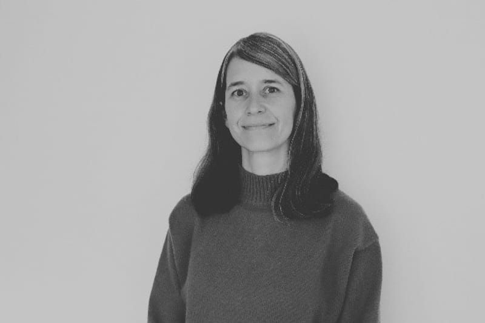

Tania Delgado
Consultora con amplia experiencia en el diseño, gestión y evaluación de iniciativas que promueven la generación, circulación y apropiación social del conocimiento a través de la Investigación + Creación. Su trayectoria integra el trabajo con comunidades académicas, artísticas y creativas en procesos de cocreación, así como la formulación e implementación de políticas e instrumentos para fortalecer el sector creativo y cultural.
En los sectores público y privado ha impulsado el posicionamiento de las prácticas y oficios de la creación como formas de experimentación, indagación y pensamiento que, integradas a la investigación, generan conocimiento capaz de trascender el contexto académico. Fue representante nacional de la Red Académica de Diseño en la Mesa de Investigación + Creación de Colciencias, un espacio que posicionó la Creación Artística en el Sistema Nacional de Ciencia, Tecnología e Innovación. Es editora académica del libro Ética en la creación: hacia una práctica íntegra y responsable.